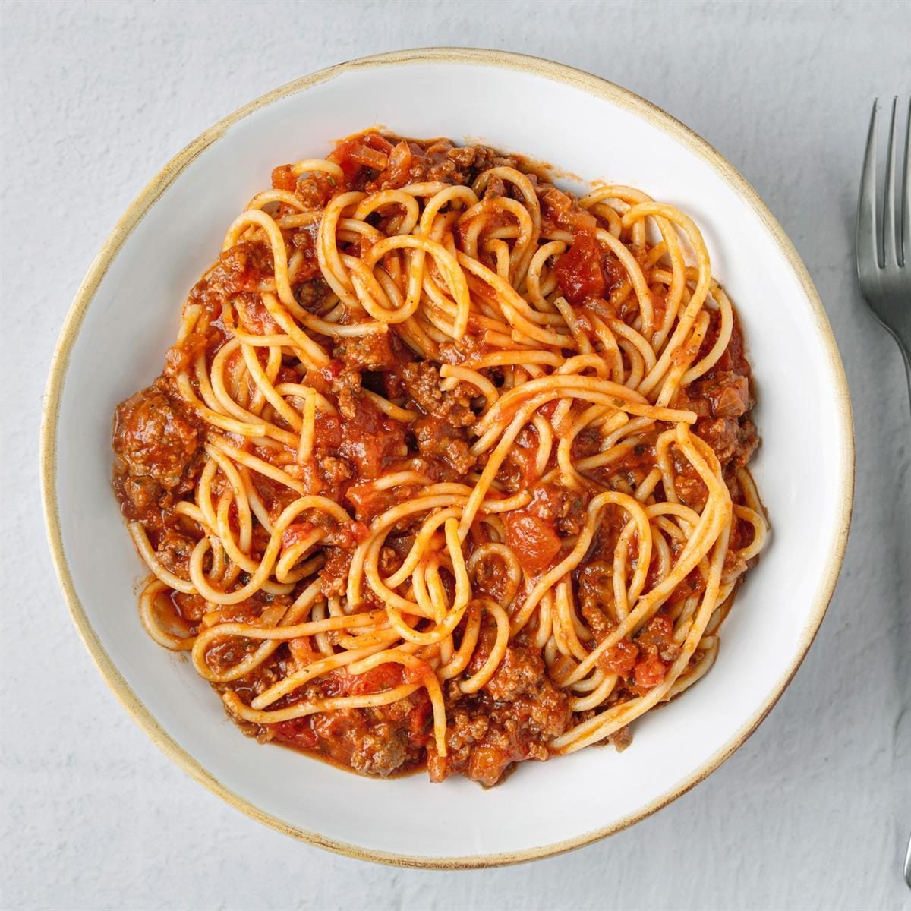

Home
Spaghetti

Description
Spaghetti is a classic Italian pasta dish made with long, thin noodles
served with a simple tomato‑based sauce. It’s quick to prepare,
comforting, and endlessly customizable.
Cook dried spaghetti in salted boiling water until al dente. Meanwhile,
simmer a sauce made from olive oil, garlic, crushed tomatoes, salt,
pepper, and a bit of basil. Toss the drained pasta with the sauce, finish
with grated parmesan, and serve warm.
Ingredients
- 200 g spaghetti
- 2 cups tomato sauce (jarred or homemade)
- 2 cloves garlic, minced
- 2 tbsp olive oil
- Salt & pepper (to taste)
- Grated parmesan & fresh basil (optional)
Steps
- Bring a pot of salted water to a boil.
- Add spaghetti and cook until al dente (usually 8–10 minutes).
- While pasta cooks, heat olive oil in a pan and sauté garlic for 30
seconds.
- Pour in tomato sauce, season with salt and pepper, and simmer for 5
minutes.
- Drain the spaghetti and toss it directly into the sauce.
- Serve hot with parmesan and basil if you like.